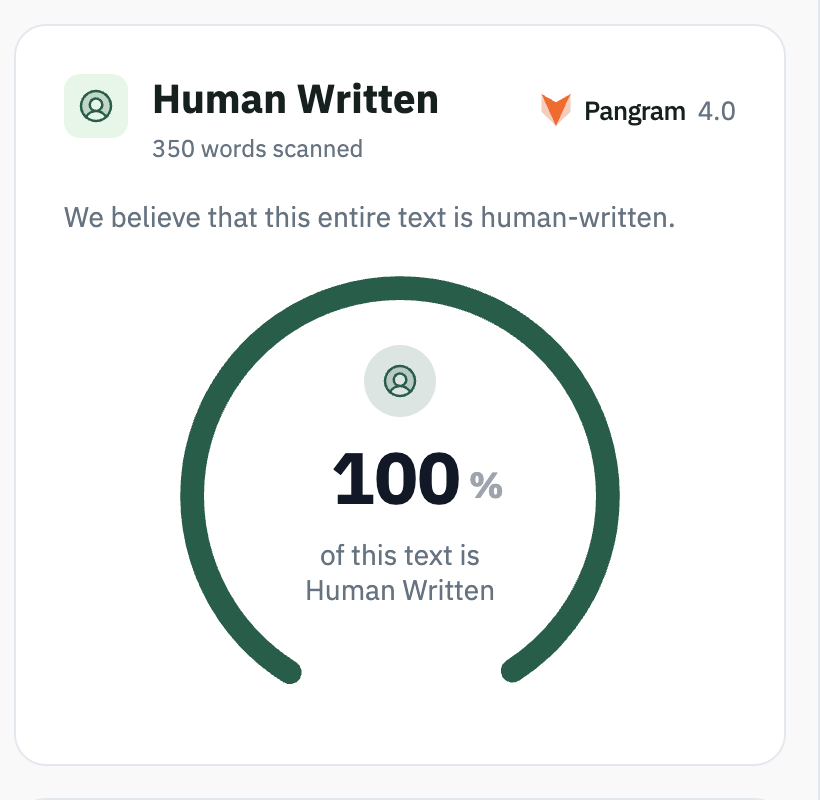

Who’s actually writing on LinkedIn?

LinkedIn was for many years, a social network that was in a league of its own, very different from other competitors like Facebook or Instagram. This was mainly because LinkedIn served three main goals better than the other social networks: looking for jobs and talent, looking for industry updates and insights from peers and keeping connections with former colleagues, all of this while keeping a professional vibe.
Enter generative AI, and all the great insights from interesting people of LinkedIn became, for the most part, AI slop. What used to be a place where one could find clues for the direction of an industry or interesting updates from relevant people in key roles, now is just a collection of soulless posts made partially or fully by AI that transformed the entire network into bots talking to bots, AI content made for AI consumers. In fact, LinkedIn is now one of the most AI saturated major social networks, as found by Originality.ai that discovered that 81% of a sample of 5000 posts were “likely AI”, and confirmed by Pangram that found out that more than 40% of LinkedIn posts with more than 250 words were generated by AI. The same is true for comments, meaningless comments like “Spot on, couldn’t agree more” or “So true! Curious to hear about …”, replaced what could be a living discussion about some interesting topic. This has become a such a relevant issue that LinkedIn is now letting users flag and label what might be AI-slop content.
As a long-time LinkedIn user, the content that I used to find useful is now creating fatigue. Since generative AI tends to use the same writing patterns, posts across LinkedIn tend to look the same, repetitive, predictable with little original content. The social feedback loop is also lost, there’s no one behind taking the accountability of what is written and open for discussion. There’s also an increasing effort from the human user to find content that is truly meaningful, which reduces the value of returning to LinkedIn.